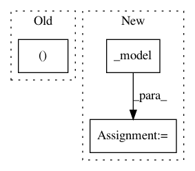

2f1905529d25e62179850aa222f65ed685ff682f,foolbox/ext/native/models/base.py,TransformBoundsWrapper,__call__,#TransformBoundsWrapper#Any#,43
Before Change
return self._bounds
def __call__(self, inputs):
inputs, restore = wrap(inputs)
x = inputs
x = self._preprocess(x)
x = self._model.__call__(x)
After Change
def __call__(self, inputs: T) -> T:
x, restore_type = ep.astensor_(inputs)
y = self._preprocess(x)
z = self._model(y)
return restore_type(z)
def transform_bounds(self, bounds: Bounds, inplace=False) -> Model:
if inplace:
In pattern: SUPERPATTERN
Frequency: 3
Non-data size: 3
Instances
Project Name: bethgelab/foolbox
Commit Name: 2f1905529d25e62179850aa222f65ed685ff682f
Time: 2020-01-31
Author: git@jonasrauber.de
File Name: foolbox/ext/native/models/base.py
Class Name: TransformBoundsWrapper
Method Name: __call__
Project Name: IBM/adversarial-robustness-toolbox
Commit Name: 0cceb4f21605ba55c6b2f0eb0052b297d3cff6d1
Time: 2021-02-05
Author: beat.buesser@ie.ibm.com
File Name: art/estimators/classification/keras.py
Class Name: KerasClassifier
Method Name: predict
Project Name: dmlc/gluon-nlp
Commit Name: 6e4ae87778510fb8894583ad0a69d86ad6b6a724
Time: 2019-09-24
Author: linhaibin.eric@gmail.com
File Name: scripts/bert/run_pretraining.py
Class Name: ParallelBERT
Method Name: forward_backward